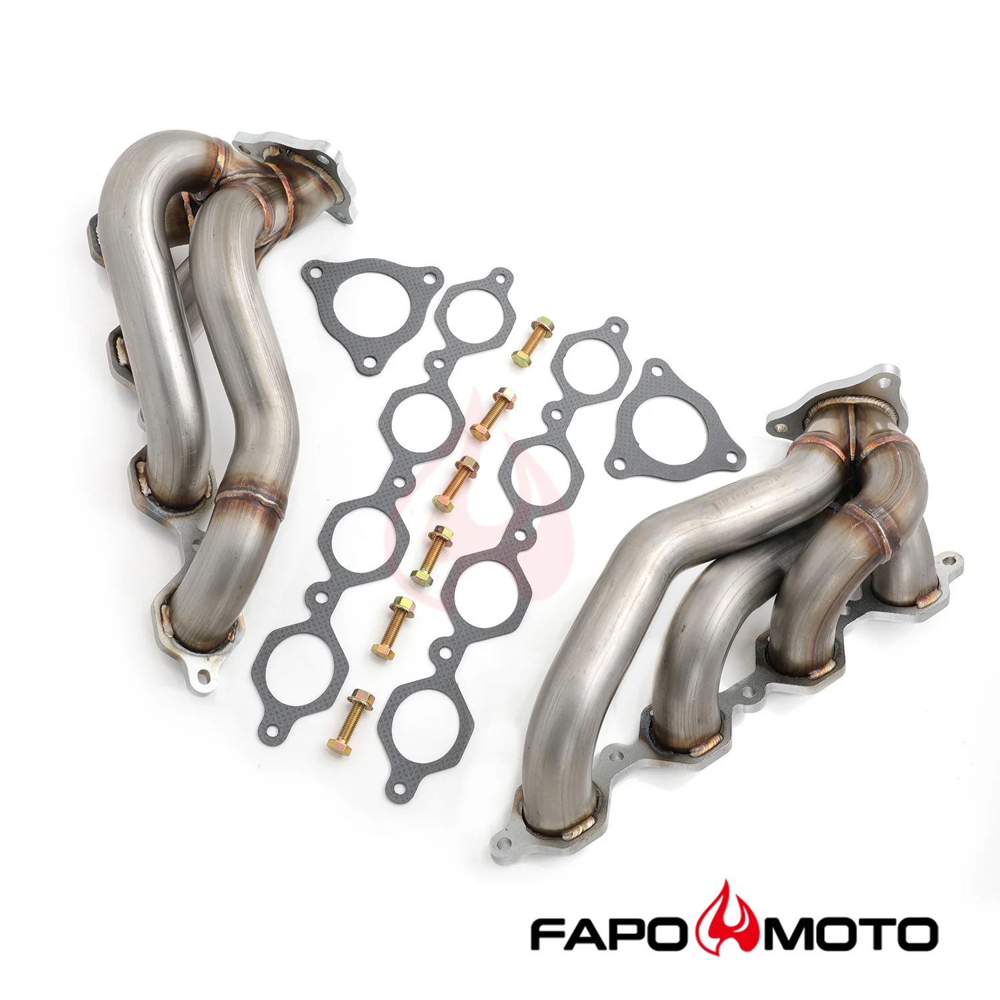

1 / 8FAPO kolektor wydechowy shorty Do 14-18 Chevy Silverado GMC Sierra 1500 5.3L V8 1-7/8 Primary 409SS FE640160
Aplikacja Kompatybilny z 2014-2018 Chevrolet Silverado 1500 z 5.3L V8 Kompatybilny z 2014-2018 GMC Sierra/Sierra 1500 z 5.3L V8 Silnik GM Small Block Gen III/IV (oparty na LS). Cechy Skośne kolektory scalone, aby zmaksymalizować prędkość spalin i oczyszczanie Doskonała jakość i trwałość poprawiająca osiągi pojazdu Krótka konstrukcja zapewniająca wzrost mocy od obrotów biegu jałowego do średnich obrotów Rury w pełni…
Application Compatible with 2014-2018 Chevrolet Silverado 1500 with 5.3L V8 Compatible with 2014-2018 GMC Sierra / Sierra 1500 with 5.3L V8 GM Small Block Gen III/IV (LS Based) Engine Features Mitered merge collectors to maximize exhaust velocity and scavenging Excellent quality and durability to improve vehicle performance Shorty design for power gain from idle to mid-range RPM Fully mandrel bent tubes made of high quality 16-gauge 409 Stainless Steel Head flanges laser-cut from high quality 3/8-inch thick steel plates The flange is flattened by a hydraulic press for precise and leak-free sealing All joints are golden color TIG brass style welded to prevent cracking and wear Flanges chrome plated for corrosion resistance Mandrel bent pipes to maintain free flow The accessories in the photos are included 1 year warranty for any manufacturing defect Technical Specifications Header Type: Shorty / Short Tube Primary Diameter: 1-7/8 in. (48 mm) Collector Diameter: 2-1/2 in. (64 mm) Head Flange Thickness: 3/8 in. (9.5 mm) Pipe Thickness: 16 gauge (1.5 mm) Material: 409 Stainless Steel Finish: Natural
1799,99 PLN
Opis produktu
Aplikacja
- Kompatybilny z 2014-2018 Chevrolet Silverado 1500 z 5.3L V8
- Kompatybilny z 2014-2018 GMC Sierra/Sierra 1500 z 5.3L V8
- Silnik GM Small Block Gen III/IV (oparty na LS).
Cechy
- Skośne kolektory scalone, aby zmaksymalizować prędkość spalin i oczyszczanie
- Doskonała jakość i trwałość poprawiająca osiągi pojazdu
- Krótka konstrukcja zapewniająca wzrost mocy od obrotów biegu jałowego do średnich obrotów
- Rury w pełni gięte trzpieniowo, wykonane z wysokiej jakości stali nierdzewnej 409 o średnicy 16 mm
- Kołnierze głowicy wycinane laserowo z wysokiej jakości blach stalowych o grubości 3/8 cala
- Kołnierz jest spłaszczany za pomocą prasy hydraulicznej, co zapewnia precyzyjne i szczelne uszczelnienie
- Wszystkie połączenia są spawane metodą TIG w kolorze złotym, aby zapobiec pękaniu i zużyciu
- Kołnierze chromowane, co zapewnia odporność na korozję
- Rury wygięte trzpieniem w celu utrzymania swobodnego przepływu
- Akcesoria widoczne na zdjęciach są wliczone w cenę
- 1 rok gwarancji na wszelkie wady produkcyjne
Dane techniczne
- Typ nagłówka: krótka / krótka rurka
- Średnica podstawowa: 1-7/8 cala (48 mm)
- Średnica kolektora: 2-1/2 cala (64 mm)
- Grubość kołnierza głowicy: 3/8 cala (9,5 mm)
- Grubość rury: 16 mm (1,5 mm)
- Materiał: stal nierdzewna 409
- Wykończenie: Naturalne
Application
- Compatible with 2014-2018 Chevrolet Silverado 1500 with 5.3L V8
- Compatible with 2014-2018 GMC Sierra / Sierra 1500 with 5.3L V8
- GM Small Block Gen III/IV (LS Based) Engine
Features
- Mitered merge collectors to maximize exhaust velocity and scavenging
- Excellent quality and durability to improve vehicle performance
- Shorty design for power gain from idle to mid-range RPM
- Fully mandrel bent tubes made of high quality 16-gauge 409 Stainless Steel
- Head flanges laser-cut from high quality 3/8-inch thick steel plates
- The flange is flattened by a hydraulic press for precise and leak-free sealing
- All joints are golden color TIG brass style welded to prevent cracking and wear
- Flanges chrome plated for corrosion resistance
- Mandrel bent pipes to maintain free flow
- The accessories in the photos are included
- 1 year warranty for any manufacturing defect
Technical Specifications
- Header Type: Shorty / Short Tube
- Primary Diameter: 1-7/8 in. (48 mm)
- Collector Diameter: 2-1/2 in. (64 mm)
- Head Flange Thickness: 3/8 in. (9.5 mm)
- Pipe Thickness: 16 gauge (1.5 mm)
- Material: 409 Stainless Steel
- Finish: Natural
FAPO Polska
Ten produkt obsługujemy lokalnie
Autoryzowana obsługa
FAPO Polska prowadzi katalog, kontakt i zamówienia bez odsyłania klienta do zewnętrznych sklepów.
Dobór po aucie
Sprawdzamy dopasowanie produktu do pojazdu, rocznika i wersji przed finalizacją zamówienia.
Wsparcie po zakupie
Masz kontakt w Polsce w sprawach zamówień, wysyłki, gwarancji i zwrotów.